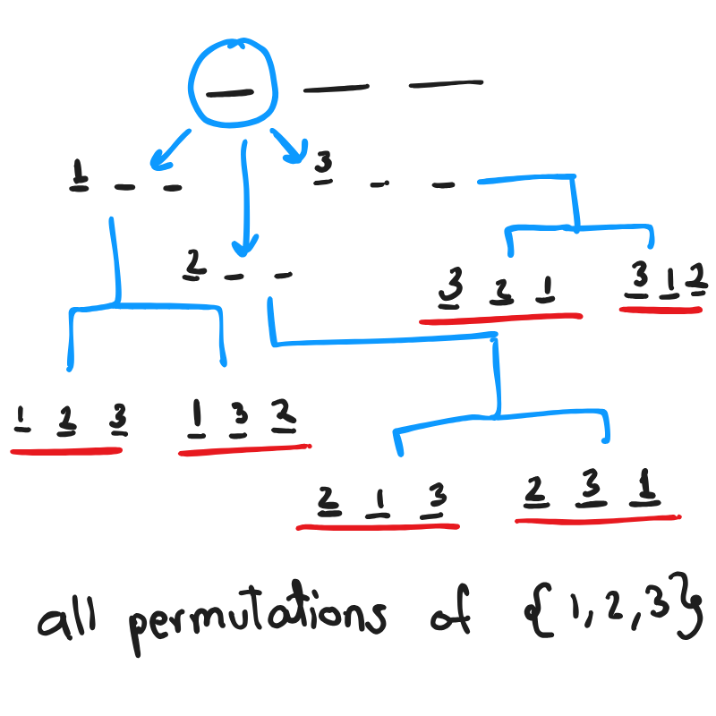

is also known as Complete Search. It is a method that involves traversing the search space entirely. One of the ways to optimize brute force is by pruning and traversing relavant parts of the search space. It might be unoptimized but a bug free complete search will never give a wrong answer verdict as it explores the entire search space. Brute is learnt best by practicing. Codeforces divisions usually have atleast 1 brute force easy and 1 medium level brute force question every contest (div2 and 3). However there are some techniques and patterns discussed below that help in applying these techniques:

To generate all permutations of an array, we use recursion to fix each index and backtracking to explore all configurations by restoring the original state after each recursive call.
At each recursive step, we place each remaining element at the current index, generate all permutations for the rest, and then backtrack (swap back) to restore the array for the next iteration.
nums = {0,1,2 ....};
void permutations(int index, vi &nums){
if(index == n)
{
//process this permutation ...
return;
}
for(int i = index; i < n;i++)
{
swap(nums[i], nums[index]);
permutation(index+1, nums);
swap(nums[i], nums[index]); // backtracking
}
}
This Numberphile video on josephus problem when you have to kill alternate people explain very well how you should approach a problem. Similarly try to see what would happen if every kth person was killed and not every 2nd person.